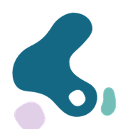
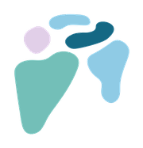
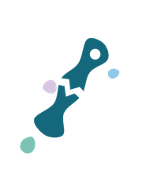
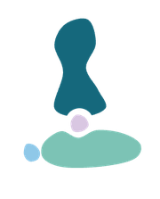

Recupera
tu movimiento
Soy la Dra. Abril Méndez Pérez, especialista en Ortopedia y Traumatología, y en reemplazo articular. Atención cercana y de alta especialidad.

Diagnóstico y tratamiento especializado
Atención integral desde la valoración hasta la recuperación, con enfoque en articulaciones y lesiones deportivas.

Reemplazo articular
Lesiones deportivas de rodilla

Hombro

Fracturas

Pie y tobillo
¿No sabes qué necesitas?
Agenda una valoración y define el mejor plan de tratamiento para tu caso.
Escríbeme →Dra. Abril Méndez Pérez
Médico cirujano por la Universidad Anáhuac México, especialista en Ortopedia y Traumatología con alta especialidad en Cirugía de Reemplazo Articular formada en el Hospital Central Militar. Combino técnica de alta especialidad con un trato humano y cercano en cada consulta.
Un proceso claro, de principio a fin
Agenda
Escríbeme por WhatsApp y elegimos el horario y la sede que mejor te queden.
Valoración
Revisamos tu historia, exploración y estudios para entender tu caso a fondo.
Plan de tratamiento
Te explico las opciones —conservadoras o quirúrgicas— con claridad y sin tecnicismos.
Seguimiento
Acompaño tu recuperación con citas de control hasta que vuelvas a moverte bien.